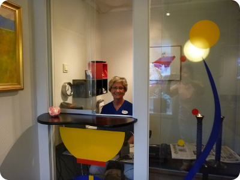

Det ytes i dag støtte til en del tannbehandlinger, deriblant:
Mister du en tann pga tannkjøttsykdom og vil erstatte denne, får du dekket deler av behandlingen, enten du velger en protese, bro eller implantat.
Du slipper selv å gå på trygdekontoret siden vi har godkjent direkteoppgjør. Det vil si at vi trekker beløpet som du får dekket, fra vår regning.